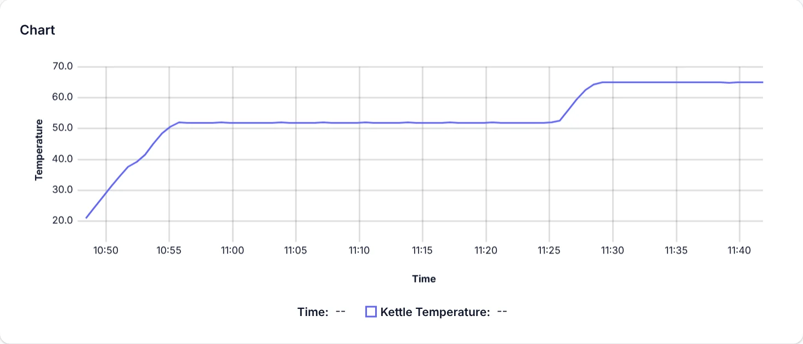
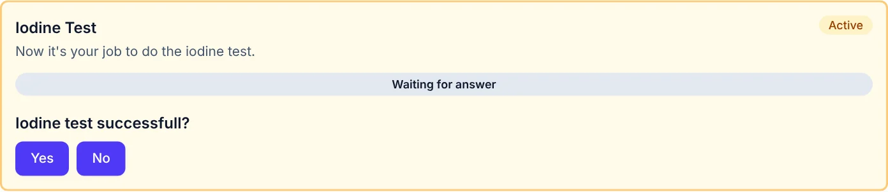
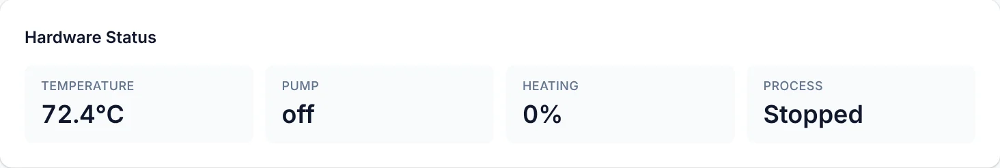
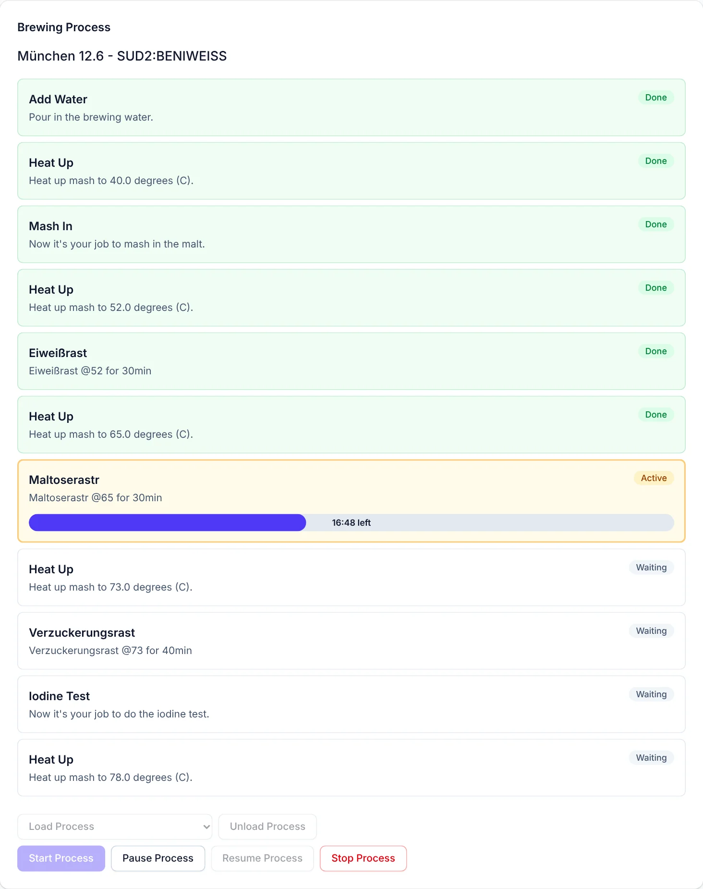

Temperature control
Full power to heat up, half power close to the target, then it holds each rest while the pump keeps the mash moving. A chart shows the kettle temperature since the start, so you see each ramp and rest as it happens.

BrewberryPi / Software
The brewing app and the operating system it runs on come as one image. You flash it, start the Pi and open the app in your browser.
Download BrewberryPi OS Free and open source · image for Raspberry Pi 3, 4 and 5 · pre-release (alpha)


Real screenshots of the app running a recipe in simulation mode.
Mash controlling
Full power to heat up, half power close to the target, then it holds each rest while the pump keeps the mash moving. A chart shows the kettle temperature since the start, so you see each ramp and rest as it happens.

BrewberryPi heats, holds the rests and runs the pump on its own, and tells you when it's your turn: pour in the water, mash in, do the iodine test. Confirm on any device, and it carries on. A buzzer reminds you until you do.

The heater is off whenever it isn't actively controlling temperature. All outputs go off at start-up and on every stop, crash or hang, backed by the systemd and hardware watchdogs.

The feature list grows with the project. Have an idea? Open an issue on GitHub.
Recipe definition
Heat up, rest, mash in, iodine test, lautering, boil. A recipe is a small JSON file, and each step switches the heater and pump on its own or waits for you.
Write your mash schedule once as a list of steps: the target temperature of each heat-up, the temperature and minutes of each rest, the extra minutes after an iodine test that isn't done yet, and the boil time. Give your rests their own names. BrewberryPi works through it step by step, like this step mash for a wheat beer.

A recipe is a small JSON file: list the steps with their temperatures and minutes. Drop it into the recipes folder on the Pi's network share, and it shows up in the app within seconds.
{
"name": "München 12.6 - SUD2:BENIWEISS",
"goals": [
{ "type": "PourInBrewingWater" },
{ "type": "HeatUp", "temperature": 40 },
{ "type": "MashIn" },
{ "type": "HeatUp", "temperature": 52 },
{ "type": "Rest", "temperature": 52, "minutes": 30,
"name": "Eiweißrast" },
…
{ "type": "IodineTest", "temperature": 73, "minutes": 10 },
{ "type": "HeatUp", "temperature": 78 }
]
}All step types and fields: Recipe specification
Operating system
BrewberryPi OS is a ready-made Raspberry Pi image built for one job. It starts the app at boot, keeps it up to date and keeps it safe.
Write the image with Raspberry Pi Imager. The app starts on its own at every boot.
Flashing guideNo home network found? The Pi opens its own hotspot, and your phone lands on the Wi-Fi setup page.
Wi-Fi setupTemperature, heater power and pump at a glance, pushed to every browser in your network the moment they change. Any of them can control the brew.
New versions install from the device page. They are signature-checked, and the previous one stays for rollback.
App versions and updatesDevice settings on their own page, and the config folder as a network share you open from your computer.
ConfigurationThe system is read-only; settings and app versions live on their own data partition.
How the OS worksApp and operating system on GitHub, with the user manual, the app specification and the developer guide.